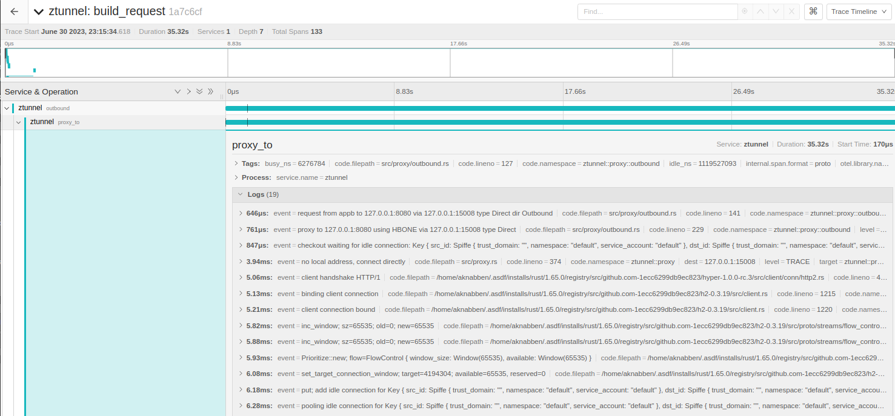
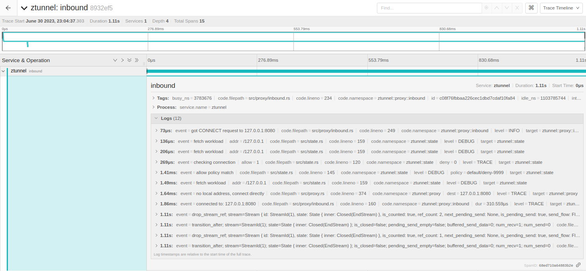

There was rewrite of the Layer 4 processing of Istio in rust
This simplification in conjuntion with Waypoint Layer 7 made possible to decouple both capabilities
allowing a more robust and straightfoward and faster implementation of a reverse proxy for
sidecar removal, it is called ztunnel, and that’s the proxy, that offer a basic authorization
layer 4 based on SPIFFE ID peer/service identification and encryption transparently.
After setting the ambient label in the default and listing the workloads:
$ kubectl label ns default istio.io/dataplane-mode=ambient
$ kubectl get pods
appa-bf7c45dcb-lmtg2 1/1 Running 0 4m29s 10.244.1.8 ambient-worker <none> <none>
appb-76b56f7cb4-qkjl7 1/1 Running 0 4m29s 10.244.2.4 ambient-worker2 <none> <none>
appb-istio-waypoint-6f8dfd8d4-565jx 1/1 Running 0 3m58s 10.244.1.10 ambient-worker <none> <none>
This is the flow when the appa sends a request to appb.
Both IP addresses are part of the ztunnel-pods-ips, the packets from them are mark as 0x100/0x100
and as seen the traffic is sent via Geneve tunnel to 192.168.127.2 via 101 table, the TPROXY
rules captures everything on this interface of the ztunnel and TPROXY (keeping the source IP) directly
to localhost TCP 15001 where the ztunnel is listenning.
The destination is in another host where it receives the HBONE encapsuled packet on 15008 (pistioin),
with the actual destination still being the pod in the mesh (appb). To read more about the HBONE tunnel.
A good overview of the flow is described here.
For same node, we just access it directly rather than making a full network connection. We could apply this to all traffic, rather than just for destinations that are “captured” However, we would then get inconsistent behavior where only node-local pods have RBAC enforced.
if req.request_type == RequestType::DirectLocal && can_fastpath {
Envoy discovery services and their corresponding APIs are referred to as xDS. Every configuration resource in the xDS API has a type associated with it. This information is transported over the xDS transport API, but uses a custom ambient-specific type.
Can be fetched as:
$ kubectl -n istio-system exec -it ztunnel-nnd8m -- curl http://localhost:15000/config_dump | jq .workloads
ambient-worker and appa
{
"10.244.1.8": {
"workloadIp": "10.244.1.8",
"waypointAddresses": [],
"gatewayAddress": null,
"protocol": "HBONE",
"name": "appa-bf7c45dcb-lmtg2",
"namespace": "default",
"trustDomain": "cluster.local",
"serviceAccount": "appa",
"workloadName": "appa",
"workloadType": "deployment",
"canonicalName": "appa",
"canonicalRevision": "v1",
"node": "ambient-worker",
"nativeHbone": false,
"authorizationPolicies": [],
"status": "Healthy",
"clusterId": "Kubernetes"
},
}
ambient-worker2 and appb with an waypoint L7 gateway on xDS:
{
"10.244.2.4": {
"workloadIp": "10.244.2.4",
"waypointAddresses": [
"10.244.1.10"
],
"gatewayAddress": null,
"protocol": "HBONE",
"name": "appb-76b56f7cb4-qkjl7",
"namespace": "default",
"trustDomain": "cluster.local",
"serviceAccount": "appb",
"workloadName": "appb",
"workloadType": "deployment",
"canonicalName": "appb",
"canonicalRevision": "v1",
"node": "ambient-worker2",
"nativeHbone": false,
"authorizationPolicies": [],
"status": "Healthy",
"clusterId": "Kubernetes"
},
}
It’s possible to mock the xDS and start the ztunnel locally. After compiled, set the following parameters:
source ./scripts/local.sh
❯ source ./scripts/local.sh
❯ export ZTUNNEL_REDIRECT_USER="iptables1"
redirect-user-setup
redirect-to 15001
sudo iptables -t nat -D OUTPUT -p tcp -m owner --uid-owner 1001 -m comment --comment local-redirect-to -j REDIRECT --to-ports 15001
sudo ip6tables -t nat -D OUTPUT -p tcp -m owner --uid-owner 1001 -m comment --comment local-redirect-to -j REDIRECT --to-ports 15001
Redirecting calls from UID 1001 to 15001
Try: sudo -u iptables1 curl
This will setup rules locally to redirect all traffic from the user iptables1 to 15001 TCP, the outbound port from ztunnel, start
the ztunnel using these parameters:
RUST_LOG=trace XDS_ADDRESS="" FAKE_CA="true" LOCAL_XDS_PATH=./examples/localhost.yaml ./out/rust/debug/ztunnel
2023-07-01T01:59:56.788024Z INFO ztunnel: version: version.BuildInfo{Version:"ea748c65254a64dcb644f2b3aae54ed05c3ea53e-dirty", GitRevision:"ea748c65254a64dcb644f2b3aae54ed05c3ea53e-dirty", RustVersion:"1.65.0", BuildStatus:"Modified", GitTag:"1.19.0-alpha.1-2-gea748c6", IstioVersion:"unknown"}
2023-07-01T01:59:56.788486Z INFO ztunnel: running with config: window_size: 4194304
connection_window_size: 4194304
frame_size: 1048576
When the pod is on a different node a HBONE HTTP Connect overlay pool is created between both nodes. With the destination being the istionin port of the destination node:

The following piece of code illustrate this request via tunnel on src/outbound.rs:
let mut connection = self.pi.pool.connect(pool_key.clone(), connect).await?;
let mut f = http_types::proxies::Forwarded::new();
f.add_for(remote_addr.to_string());
let request = hyper::Request::builder()
.uri(&req.destination.to_string())
.method(hyper::Method::CONNECT)
.version(hyper::Version::HTTP_2)
.header(
BAGGAGE_HEADER,
baggage(&req, self.pi.cfg.cluster_id.clone()),
)
.header(FORWARDED, f.value().unwrap())
.header(TRACEPARENT_HEADER, self.id.header())
.body(Empty::<Bytes>::new())
.unwrap();
let response = connection.send_request(request).await?;
let code = response.status();
if code != 200 {
return Err(Error::HttpStatus(code));
}
let mut upgraded = hyper::upgrade::on(response).await?;
super::copy_hbone(
&mut upgraded,
&mut stream,
&self.pi.metrics,
transferred_bytes,
)
.instrument(trace_span!("hbone client"))
.await
The other side receives the tunneled connection and forward to the actual pod:

For inbound (15008) the request is handled via serve_connect [src/proxy/inbound.rs:249] on each new connection on this port, it filters the Method:CONNECT (HBONE),
fetch the workload with XDS, and apply any RBAC on L4 in the connection, if everything is ok handle_inbound [src/proxy/inbound.rs:160] starts a stream with freebind_connection
and the actual destination, the stream/response is finally forwarded back through the tunnel and the caller.
// inbound.rs : 195
Hbone(req) => match hyper::upgrade::on(req).await {
Ok(mut upgraded) => {
if let Err(e) = super::copy_hbone(
&mut upgraded,
&mut stream,
&metrics,
transferred_bytes,
)
.instrument(trace_span!("hbone server"))
.await
{
error!(dur=?start.elapsed(), "hbone server copy: {}", e);
}
}
Err(e) => {
// Not sure if this can even happen
error!(dur=?start.elapsed(), "No upgrade {e}");
}
},
ambient-worker metrics scrapping from source appa:
root@ztunnel-hq9lr:/# curl http://localhost:15020/metrics
# HELP istio_tcp_connections_opened The total number of TCP connections opened.
# TYPE istio_tcp_connections_opened counter
istio_tcp_connections_opened_total{
reporter="source"
source_workload="appa"
source_canonical_service="appa"
source_canonical_revision="v1"
source_workload_namespace="default"
source_principal="spiffe://cluster.local/ns/default/sa/appa"
source_app="appa"
source_version="v1"
source_cluster="Kubernetes"
destination_service="unknown"
destination_service_namespace="unknown"
destination_service_name="unknown"
destination_workload="appb"
destination_canonical_service="appb"
destination_canonical_revision="v1"
destination_workload_namespace="default"
destination_principal="spiffe://cluster.local/ns/default/sa/appb"
destination_app="appb"
destination_version="v1"
destination_cluster="Kubernetes"
request_protocol="tcp"
response_flags="-"
connection_security_policy="mutual_tls"} 29
# HELP istio_tcp_received_bytes The size of total bytes received during request in case of a TCP connection.
# TYPE istio_tcp_received_bytes counter
istio_tcp_received_bytes_total{
reporter="source"
source_workload="appa"
source_canonical_service="appa"
source_canonical_revision="v1"
source_workload_namespace="default"
source_principal="spiffe://cluster.local/ns/default/sa/appa"
source_app="appa"
source_version="v1"
source_cluster="Kubernetes"
destination_service="unknown"
destination_service_namespace="unknown"
destination_service_name="unknown"
destination_workload="appb"
destination_canonical_service="appb"
destination_canonical_revision="v1"
destination_workload_namespace="default"
destination_principal="spiffe://cluster.local/ns/default/sa/appb"
destination_app="appb"
destination_version="v1"
destination_cluster="Kubernetes"
request_protocol="tcp"
response_flags="-"
connection_security_policy="mutual_tls"} 2320
Executing curl http://appb:8000 passing traffic through the waypoint 10.244.1.10:
INFO outbound{id=c03cd45569f64624051f3ce1229fe0e4}: ztunnel::proxy::outbound: proxy to 10.96.101.203:8000 using HBONE via 10.244.1.10:15008 type ToServerWaypoint
INFO outbound{id=c03cd45569f64624051f3ce1229fe0e4}: ztunnel::proxy::outbound: complete dur=52.729529ms
INFO outbound{id=d6dfd9221fcaf31e48f21f3c8ae63dcb}: ztunnel::proxy::outbound: proxy to 10.96.101.203:8000 using HBONE via 10.244.1.10:15008 type ToServerWaypoint
INFO outbound{id=d6dfd9221fcaf31e48f21f3c8ae63dcb}: ztunnel::proxy::outbound: complete dur=4.564153ms
INFO outbound{id=9cee33aa037814fe3e741117bb8f7128}: ztunnel::proxy::outbound: proxy to 10.96.101.203:8000 using HBONE via 10.244.1.10:15008 type ToServerWaypoint
INFO outbound{id=9cee33aa037814fe3e741117bb8f7128}: ztunnel::proxy::outbound: complete dur=48.65811ms
INFO outbound{id=4bc65655c588c8ae46e122c754963dfc}: ztunnel::proxy::outbound: proxy to 10.96.101.203:8000 using HBONE via 10.244.1.10:15008 type ToServerWaypoint
INFO outbound{id=4bc65655c588c8ae46e122c754963dfc}: ztunnel::proxy::outbound: complete dur=52.020461ms
INFO outbound{id=76faadf5ecc091584f30e6d8c9cef142}: ztunnel::proxy::outbound: proxy to 10.96.101.203:8000 using HBONE via 10.244.1.10:15008 type ToServerWaypoint
INFO outbound{id=76faadf5ecc091584f30e6d8c9cef142}: ztunnel::proxy::outbound: complete dur=3.984971ms
INFO outbound{id=94b826c34ce67957114b48cd54eb231d}: ztunnel::proxy::outbound: proxy to 10.96.101.203:8000 using HBONE via 10.244.1.10:15008 type ToServerWaypoint
INFO outbound{id=94b826c34ce67957114b48cd54eb231d}: ztunnel::proxy::outbound: complete dur=46.497344ms
ambient-worker-2 metrics receiving the requeset on appb:
# HELP istio_tcp_connections_opened The total number of TCP connections opened.
# TYPE istio_tcp_connections_opened counter
istio_tcp_connections_opened_total{
reporter="destination"
source_workload="appb-istio-waypoint"
source_canonical_service="appb-istio-waypoint"
source_canonical_revision="latest"
source_workload_namespace="default"
source_principal="spiffe://cluster.local/ns/default/sa/appb-istio-waypoint"
source_app="appb-istio-waypoint"
source_version="latest"
source_cluster="Kubernetes"
destination_service="unknown"
destination_service_namespace="unknown"
destination_service_name="unknown"
destination_workload="appb"
destination_canonical_service="appb"
destination_canonical_revision="v1"
destination_workload_namespace="default"
destination_principal="spiffe://cluster.local/ns/default/sa/appb"
destination_app="appb"
destination_version="v1"
destination_cluster="Kubernetes"
request_protocol="tcp"
response_flags="-"
connection_security_policy="mutual_tls"} 79
istio_tcp_connections_opened_total{
reporter="destination"
source_workload="appa"
source_canonical_service="appa"
source_canonical_revision="v1"
source_workload_namespace="default"
source_principal="spiffe://cluster.local/ns/default/sa/appa"
source_app="appa"
source_version="v1"
source_cluster="Kubernetes"
destination_service="unknown"
destination_service_namespace="unknown"
destination_service_name="unknown"
destination_workload="appb"
destination_canonical_service="appb"
destination_canonical_revision="v1"
destination_workload_namespace="default"
destination_principal="spiffe://cluster.local/ns/default/sa/appb"
destination_app="appb"
destination_version="v1"
destination_cluster="Kubernetes"
request_protocol="tcp"
response_flags="-"
connection_security_policy="mutual_tls"} 4
Receiving from waypoint and forward to the pod IP:port
INFO inbound{peer_ip=10.244.1.10 peer_id=spiffe://cluster.local/ns/default/sa/appb-istio-waypoint}: ztunnel::proxy::inbound: got CONNECT request to 10.244.2.4:80
INFO inbound{peer_ip=10.244.1.10 peer_id=spiffe://cluster.local/ns/default/sa/appb-istio-waypoint}: ztunnel::proxy::inbound: got CONNECT request to 10.244.2.4:80
INFO inbound{peer_ip=10.244.1.10 peer_id=spiffe://cluster.local/ns/default/sa/appb-istio-waypoint}: ztunnel::proxy::inbound: got CONNECT request to 10.244.2.4:80
INFO inbound{peer_ip=10.244.1.10 peer_id=spiffe://cluster.local/ns/default/sa/appb-istio-waypoint}: ztunnel::proxy::inbound: got CONNECT request to 10.244.2.4:80
INFO inbound{peer_ip=10.244.1.10 peer_id=spiffe://cluster.local/ns/default/sa/appb-istio-waypoint}: ztunnel::proxy::inbound: got CONNECT request to 10.244.2.4:80
INFO inbound{peer_ip=10.244.1.10 peer_id=spiffe://cluster.local/ns/default/sa/appb-istio-waypoint}: ztunnel::proxy::inbound: got CONNECT request to 10.244.2.4:80
INFO inbound{peer_ip=10.244.1.10 peer_id=spiffe://cluster.local/ns/default/sa/appb-istio-waypoint}: ztunnel::proxy::inbound: got CONNECT request to 10.244.2.4:80